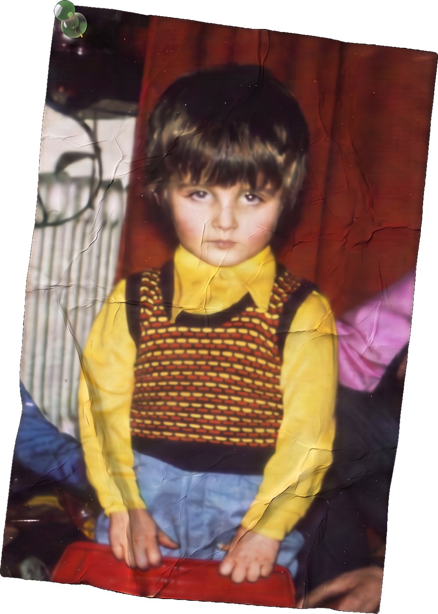
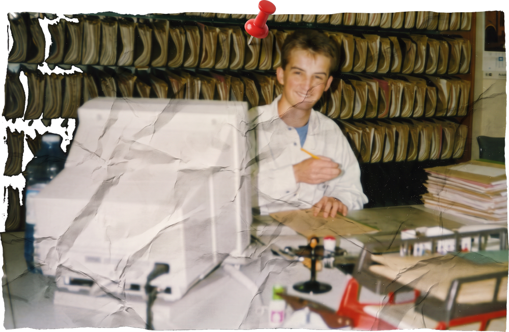

Mein Weg zum Thriller
-

Geboren am 23. März 1971 in Stuttgart, aufgewachsen in einem kleinen Vorort – als Kind bayrisch-oberpfälzischer Eltern mitten im Schwabenland. Manche würden es eine multikulturelle Kindheit nennen. In Wahrheit bedeutete es vor allem: zu Hause wurde ein Dialekt gesprochen, den auf dem Pausenhof niemand verstand. Meine erste Fremdsprache erlernte ich also autodidaktisch – im Rückblick wahrscheinlich eine der besten Vorbereitungen aufs Schreiben. Mein Gott, was musste mein erster Deutschlehrer leiden.
-
1980 passierte dann das, was man in Autorenbiografien gerne den „Urknall“ nennt: Ich entdeckte das Lesen. Genauer gesagt entdeckte „Die unendliche Geschichte“ mich. Ich verschlang das Buch in zwei Tagen – mit einer Hingabe, die meine Eltern zwischen Stolz und Erstaunen zurückließ. 1984 folgte die logische Konsequenz: Ich wurde als erster Junge überhaupt Sieger im Lesewettbewerb meiner Schule. Ein Titel, auf den ich bis heute genauso stolz bin wie damals. Till Eulenspiegel war einfach wie geschaffen fürs Vorlesen. Auswahl, Vorbereitung und Durchführung waren das Geheimnis meines Erfolgs. Etwas, das sich in meinem Leben noch oft wiederholen sollte. Die Weichen waren gestellt, auch wenn das damals noch niemand so genau wissen konnte – am wenigsten ich selbst.
-

Zunächst erlernte ich, wie es sich gehört, einen anständigen Beruf. Von diesem ließe sich einiges erzählen – vielleicht sogar ein eigenes Buch schreiben, wer weiß –, aber jede gute Geschichte lebt vom Weglassen. Mein Berufsleben gehört also, mit Verlaub, in ein anderes Kapitel. Bemerkenswert ist an dieser Stelle nur so viel: Ohne die vielen Menschen, denen ich während dieser Zeit begegnet bin, könnte ich mir viele der tollen Charaktere meiner Geschichten nicht ausdenken. Und: Als ich, lange bevor Peter Jackson daraus einen Blockbuster machte, „Der Herr der Ringe“ las, entstand in mir zum ersten Mal der Wunsch, selbst zu schreiben. Nicht zu lesen, was andere sich ausgedacht hatten – sondern es selbst zu tun.
-
Der Entwurf meiner ersten eigenen Geschichte überlebte daraufhin mein halbes Leben. Schubladen, Umzüge, Betriebssysteme – er hielt allem stand. Denn Schreiben war nie ein Plan, sondern eine Leidenschaft, ein Ventil. Ich schrieb, um mich auszudrücken, jahrelang nur für mich, ohne Ambition auf ein Publikum.
-
2021 war es dann so weit: Meine erste Geschichte erschien unter dem Pseudonym Tom J. Schreiber. Ein Jugendbuch – schließlich war ich selbst noch jung, als ich zu schreiben begann, auch wenn zwischen erstem Entwurf und Veröffentlichung ein paar Jahrzehnte lagen. Ungeduldig, wie ich nun einmal bin, schrieb ich keine Verlagsbewerbungen und wartete nicht auf Antworten, die vielleicht nie kommen würden. Stattdessen suchte ich mir selbst einen Korrektor, einen Illustrator, einige Testleser und veröffentlichte auf eigene Faust.
-
Die Leidenschaft hatte mich endgültig gepackt. Aus der ersten Geschichte wurde eine Fortsetzungsreihe für Jugendliche. Und weil ich gerne spannend schreibe – am liebsten noch viel spannender als zu diesem Zeitpunkt – wagte ich mich an ein neues Genre: den Thriller. Mehr Nervenkitzel, mehr Tempo. So wurde aus dem Jugendbuchautor Tom J. Schreiber wieder der echte Thomas Gerl – der Thrillerautor. Und der schreibt, und schreibt, und schreibt …
Ob das alles Talent ist oder einfach nur Sturheit mit Happy End?
Lesen Sie in meinen Büchern am besten selbst nach.